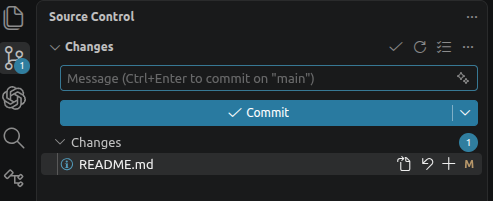
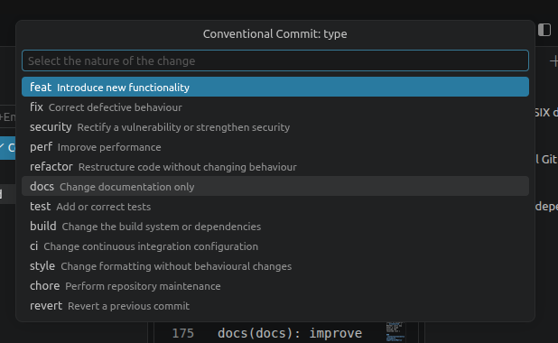
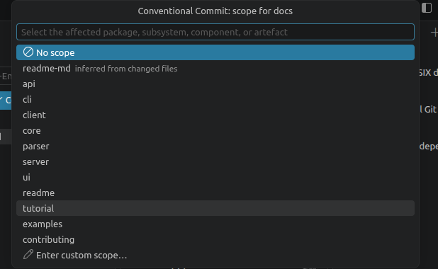
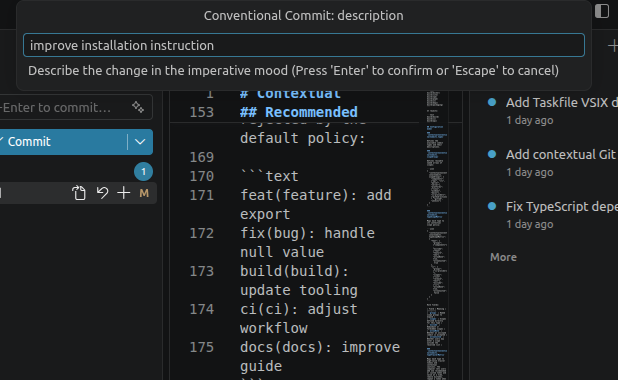
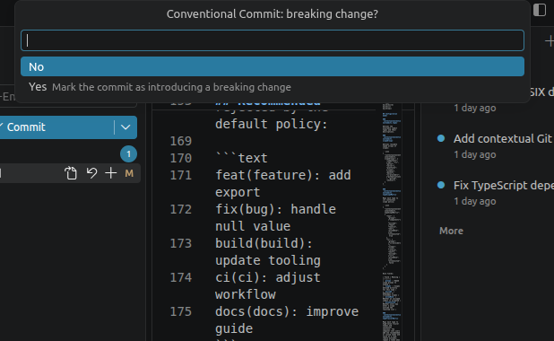
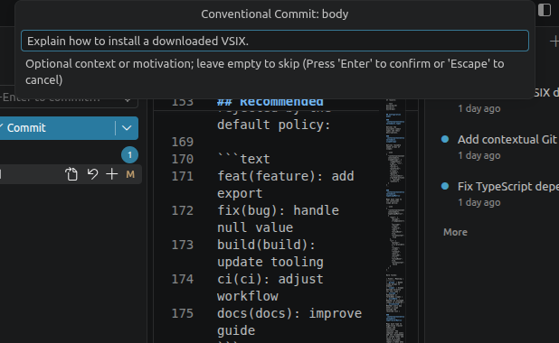
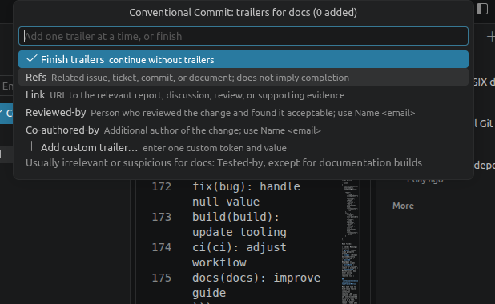
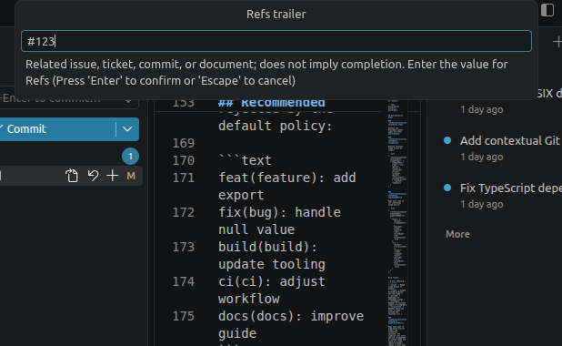
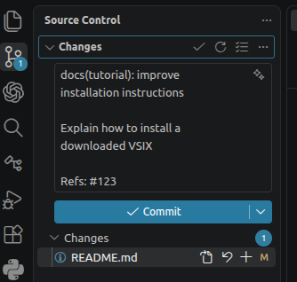

Create your first conventional commit
In this tutorial you will change a file, compose a Conventional Commit through VS Code, inspect the generated message, and commit it. The example produces this message:
docs(tutorial): improve installation instructions
Explain how to install a downloaded VSIX.
Refs: #123
Allow about five minutes.
Before you begin
You need:
- VS Code 1.95 or newer;
- the Contextual Conventional Commits extension installed;
- a folder containing a Git repository; and
- at least one changed file.
If you want to follow the example closely, edit a tutorial file. Any changed file is suitable, however.
1. Open Source Control
- Open your Git repository in VS Code.
- Select Source Control in the Activity Bar, or press Ctrl+Shift+G (⌃+⇧+G on macOS).
- Find your changed file under Changes.
- Select the + beside the file to stage it.
Staging first makes it clear exactly what the commit will contain. The composer considers staged, unstaged, and merge changes when suggesting scopes.

2. Start the composer
Use either of these entry points:
- Open the Command Palette with Ctrl+Shift+P (⇧+⌘+P on macOS), type Git: Compose Contextual Conventional Commit, and press Enter.
- Select the Compose Contextual Conventional Commit checklist icon in the Source Control view.
If the workspace contains several Git repositories, choose the repository that contains your staged change. With one repository, this step is skipped.

3. Choose the type
The first list describes the nature of the change. Select docs because this example changes documentation.
The two types with standard release meaning are:
- fix for a bug fix;
- feat for a new feature.
The project policy can offer other types, including docs, test, refactor, and chore. Choose the type that describes the change itself, not the file you happened to edit.

4. Choose the scope
Select tutorial when it appears in the scope list.
A scope identifies the affected part of the codebase and becomes the parenthesised part of the header. Because you selected docs, the default policy offers component and documentation scopes such as readme, api, tutorial, and examples. It excludes docs because docs(docs) repeats the type without identifying the affected documentation area.
The extension lists non-excluded scopes inferred from changed directories first, followed by the scopes resolved for the selected type. No scope and Enter custom scope… appear only when that type's rule allows them.

5. Write the description
Enter:
improve installation instructions
Use a short, imperative summary that completes the thought “this commit will…”. With the default extension policy:
- begin with a lowercase character;
- do not end with a period; and
- keep the entire header within 72 characters.
The field reports a policy error immediately. Correct the description before continuing.

6. Decide whether the change is breaking
Select No for this example.
Selecting Yes adds ! before the colon and asks for an explanation of the incompatible public change. The explanation is written as a BREAKING CHANGE: footer. Use this only when consumers must change how they use the software.

7. Add context in the body
Enter:
Explain how to install a downloaded VSIX.
The body is optional. It should explain motivation or context that is not obvious from the header. Leave the field empty to omit it.

8. Link related work with a footer
Select Refs, then enter this value:
#123
The value box suggests Example: #123; the example is contextual guidance and is not inserted automatically.

The picker returns after adding the trailer. Select Finish trailers to continue. Footers are optional; select Finish trailers immediately to omit them.
To add more than one footer, choose another recommended token or Add custom trailer…, then enter its value. For example, add Reviewed-by with this value:
A. Developer
The extension places each footer on its own line. You can remove an entry before finishing, repeat a token such as Co-authored-by, and use commas inside trailer values.
9. Review the generated message
After the final prompt, the extension writes the message into the Source Control commit box. It does not commit yet with the default settings.
Check that the box contains:
docs(tutorial): improve installation instructions
Explain how to install a downloaded VSIX.
Refs: #123
To verify it again, select Validate Conventional Commit beside the commit box. VS Code displays The commit message is valid.

10. Commit the staged change
- Confirm that only the intended files are staged.
- Select Commit in the Source Control view, or press Ctrl+Enter while the commit box is focused.
- If VS Code asks whether to stage other changes, read the prompt carefully and choose according to what you intend to include.
You have created a structured commit without manually assembling its syntax.
Next steps
- Configure a shared project policy.
- Record a breaking change.
- Review the complete commit format reference.